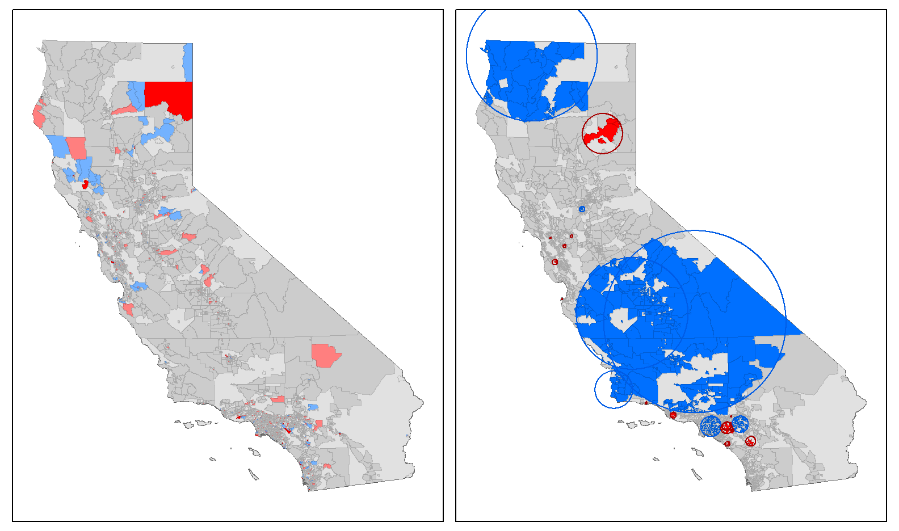

GEOG 510: Assignment #3
Similar to the last assignment, this assignment is split into 2 parts. In the first part, you will be working with data I provide to hone your overlay and table manipulation (GIS) skills. In the second part, you will be required to use SaTScan and Geoda for this lab. So, if you have not yet downloaded and installed them, do so ASAP (see Software Document posted on the website). Please at least skim through the entire assignment document before beginning.
On your computer, create a folder for Assignment #3 and a folder (inside of that one) to store data.Download GEOG510_assignment3_data.zip from here into the data folder and then unzip the contents.
Create a single document using some form of word processing software (Microsoft Word is preferred). Include your name, GEOG 510, and Assignment #3 at the top of the document. Answer/complete each of the questions/tasks below. Copy/paste graphics directly into the document where applicable.
Please save the file using the following naming format, userid_assignment3.docx. Please follow the file naming format for your document. Upload your assignment document to your OneDrive folder when complete.
When the assignment requires you to create a map, export your completed map as a .pdf document using the following naming format, userid_assignment3_map#.pdf. For example, the second map I create for this assignment would be vgoel_assignment3_map2.pdf. Please follow the file naming format for your maps as well. Upload the maps you create in this lab as separate .pdf documents.
Part #1: Using Spatial Overlay and Learning Some New Tricks in QGIS
In this example, you will use census block group (BG) data to assign population estimates to Zip Codes (i.e., you have a polygon file of South Carolina Zip Codes, but they do not have population assigned to them). There are multiple approaches to doing this operation; the one you will implement requires “distributing” the population of each Block Group to the Zip Code(s) it falls inside based on the proportion of the BG area falling in each Zip Code. For example, if 1/3 of a BG’s area falls in one Zip Code and 2/3 of its area falls in another, we would use those proportions to allocate the population from the BG to the Zip Codes. This is a pretty straightforward procedure, but will require an overlay operation (Intersect), a couple of field calculations, some table manipulation, and a table join.
Load Data and Calculate New Field Based on Geometry Properties
- Open QGIS and create a new project. Add
sc_bg_pop.gpkgandsc_zipcodes.gpkgfrom theassignment3_data/SCfolder to the Layers panel. It would be a great idea to save/name your project file now so you can come back to it later if necessary. Note: Also, dont worry about the jutting out coastline in the sc_bg_pop layer.
- Prior to adding a new field with attributes based on geometry, you can set which units you want QGIS to use. For example, in the following example, we want area to be returned in square kilometers and distance to be returned in kilometers. In the top menu, navigate to
Project | Properties. On the left, click on the General tab and find Measurements. Change the distance and area units to kilometers and square kilometers (then click OK). - Add a new field containing each BG’s area to the
sc_bg_popattribute table by first opening up the layer’s attribute table. Next, use the field calculator to add a new Decimal number field called BGAREA, with the following expression:$area. Make sure to save your edits and close the attribute table after you have confirmed that the new field has been populated.
Question #1: What is the maximum area for any BG? How/where did you find this information?
Intersect
- You will now create the new spatial features based on shared geometry (overlap) of the Zip Code and Block Group boundaries. In the top menu, navigate to Vector | Geoprocessing Tools | Intersection. For the Input layer select
sc_bg_pop,and for the Overlay layer selectsc_zipcodes. There is an issue with geometries in sc_zipcodes, so you will fix it before you can run the intersection. To do so, click the “wrench” icon next to the overlay layer and select “Do not Filter (Best Performance)“. - Save the output as
sc_bg_zip_int.gpkgin yourassignment3_data/SCfolder. Leave all other options on their default settings. Click Run. - Once complete, zoom in a bit and click
sc_bg_zip_inton and off so you can see eithersc_bg_poporsc_zipcodesunderneath. What do you notice? I notice thatsc_bg_zip_intlooks a bit “messy” because these two sets of areal units do not hierarchically nest. Open the table ofsc_bg_zip_int. You should notice that these intersected polygon features have the attributes of both input files! For each polygon in this layer, you know its Block Group and Zip Code “membership.”
Question #2: How many polygons were created in the “intersected” layer?
Calculate Area Again and Allocate Population
- To allocate the population for each BG, we need to calculate the proportion of the area of the BG that is located in each Zip Code. First, we need to add a new field to
sc_bg_zip_intwith the area of each polygon. Then, we will use the field calculator to perform the allocation. - Follow Step 3 to add a new field in
sc_bg_zip_intwith the area of each polygon (call this field BGZIPAREA). - Add a new Decimal number field named
ZIPPOPtosc_bg_zip_intusing the Field Calculator. This field will contain the formula Population * (Intersect area / Total area) for each Tract/Zip intersected polygon. The expression is:"POP" * ( "BGZIPAREA" / "BGAREA" )
Aggregate the Zip Code Population
- Now, because multiple block groups contribute to each Zip Code’s population (open the attribute table of
sc_bg_zip_intand sort it by theZipCodefield), we need to aggregate the allocated BG population to the Zip Code level. - Go to the Processing Toolbox | Vector Analysis | Statistics by categories. For Input vector layer, choose
sc_bg_zip_int. For Field to calculate statistics on, chooseZIPPOP(this is the field we will be summing). For Field(s) with categories, chooseZipCode(this is the field that contains the groups we will sum over). For the output, you can simply write as a temporary file because you won’t need it after the next step. - Open up the output table (should be called Statistics by category unless you gave it a different name). Note the various statistics for each Zip Code. The important one here is
sumwhich contains the sum of the BG population falling in each Zip Code (by area proportion).
Question #3: Which Zip Code has the highest population? What is the population of the Zip Code with the highest population?
Table Join, One More Field Calculation, and Make a Map
- You’re almost done with the first part of the assignment. The remaining task is to create a choropleth map of population density by Zip Code in South Carolina. However, to complete this, you’ll need to implement the following steps (that you should already know how to do!) in order:
- Table join the Statistics by category table to the Zip Code spatial features
- Calculate a new field with each Zip Code’s area
- Calculate a new field containing population density (People per square kilometer)
- Make a choropleth map of population density. Consider this an “internal” map, which means that it does not have to be pretty, but needs to be functional: make sure that the geographic extent is correct, you have chosen an appropriate color scheme, and include a title, legend, and your name. Export the map as a .pdf file using the userid_assignment3_map1.pdf.
Part #2: Spatial Clustering/Autocorrelation Analysis
In this portion of the assignment, you will be performing a variety of global and local clustering and autocorrelation operations using personal medical exemption (PME) data in 2015 in California (Data made available courtesy Dr. Paul Delamater). Personal medical exemption is used as a proxy to evaluate vaccine hesitancy or lack of vaccination. This analysis will provide us with quantitative information regarding the spatial patterns of medical exemption use in California. You will be comparing the autocorrelation/clustering output from GeoDa and SaTScan and making maps using QGIS. One of the things you will also be examining is the effect of neighbor definition on spatial clustering results.
- Open GeoDa. Create a new project and load data by navigating in the top menu to File | New and choosing CA_TCT_ME_2015.gpkg from
assignment3_data/CA(or by dragging the file into the specified area from Finder/Explorer). This layer contains the number of kindergarteners enrolled in 2015 and the number claiming a medical exemption (ME) for census tracts in California. This layer was created from school-level data using a spatial join of schools to tracts.
Calculate a New Field in GeoDa
GeoDa is not really a GIS software, but it does have a number of GIS-like capabilities, such as displaying/mapping data and manipulating data layers. In this case, you will use GeoDa to calculate a new field.
- Open the attribute table of CA_TCT_ME_2015 by clicking the Table button on the GeoDa toolbar. Notice that this only contains the count values for enrollment and MEs. To perform our first operations, we will need ME rates (proportions). In the top menu, choose Table | Calculator. In the popup window, select the Rates tab. We will be using the raw rate of MEs for each tract, so make sure Raw Rates is selected as the Method. On the left, click the button for Add Variable because we need a new field to hold our calculated values. In the popup window, name the variable
PME15R, Type should be real, Insert before should be set to “after last variable”. Leave the rest of the options on their default settings. Click Add. Choosepme15as the Event Variable andenr15as the Base Variable. Click Apply. - Map the new variable you calculated by right-clicking inside of the GeoDa map window, selecting Change Current Map Type | Natural Breaks | 5, and selecting
PME15R. You should now have a choropleth map ofPME15R(personal medical exemption rates in 2015).
Temporary Data
Much like QGIS, many of the operations we do in GeoDa are held in your computer’s temporary memory until you explicitly save them to the hard drive. For example, the field that you just calculated (PME15R) has not been permanently added to the CA_TCT_ME_2015 file! To finalize/save any changes you make to a spatial data layer (and attribute table) in GeoDa, in the top menu, choose File | Save. Do this now.
Project Management in GeoDa
The project management in GeoDa is also similar to QGIS in that you can save the “work” you’ve done as a “project” file. This is somewhat similar to saving a project in QGIS. To save your project, in the top menu, choose File | Save Project. Do this now and save your project as GEOG510_ME_TCT.gda in the assignment3_data/CA folder.
Define Neighbors and Global Spatial Autocorrelation in GeoDa
One of the first things that we often ask about the spatial variation in our data is, “considering all the observations (values), is the overall pattern clustered, random, or dispersed?”. We use global spatial autocorrelation metrics to answer this question. To perform this analysis, we need to first define neighbors for each observation (because autocorrelation operations require comparing each observation’s value to the value of its neighbors).
- To define spatial neighbors, click the Weights button on the toolbar (the big W) or navigate in the top menu to Tools | Weights Manager. In the Weights Manager popup window, click Create (since we don’t have any created yet). Choose
geoidas the Weights File ID Variable – this is what will link the values in the weights matrix back to the original spatial data layer. For this set of weights, we will use Queen contiguity and only consider 1st order neighbors (Order of contiguity = 1). Make sure these parameters are selected in the Weights File Creation popup window and choose Create. When prompted, save the weights file as CA_TCT_ME_2015_Queen.gal inassignment3_data/CA. Close the “weights” popup windows when complete. NOTE: Because some of the tracts do not have any contiguous neighbors, you should get a warning stating this. This is okay. - Calculate Moran’s I with GeoDa. To do this, in the top menu, click on Space | Univariate Moran’s I. Choose PME15R as the variable, as we are testing the spatial pattern of the rates of medical exemptions. Make sure CA_TCT_ME_2015_Queen.gal is selected for the weights. Click OK. NOTE: Because some of the tracts do not have any contiguous neighbors, you should get a warning stating this. This is okay.
- Nothing really exciting should happen other than a popup window containing a Moran’s I scatterplot with the Moran’s I value at the top. To run a hypothesis test (and get a p-value) comparing the results to a null hypothesis of complete spatial randomness (CSR), right click anywhere inside the Moran’s I window and choose Randomization | 999 Permutations. You should get another popup window that contains the pseudo p-value based on the value of your data compared to the random permutations. Click Run and things will change slightly – this is due to the random element in the permutation approach. Jot down the I value, the E[I] value, and pseudo p- value and close this window.
Expectation of normal distribution
One nice thing that GeoDa does is not “expect” that your data are normally distributed, and thus uses a permutation approach (randomly shuffle the values in space and calculate the statistic many times) to generate pseudo p-values rather than a Z-score based formula.
Question #4: Provide the three values from Step 16 and a quick description of each (proving to me that you understand what each means). Use the output to briefly answer (in 3-4 sentences), Are PME Rates in 2015 in California spatially clustered? Are these results important? (hint, examine the magnitude of the Moran’s I value)
Now, you will conduct a similar test, but use an alternate neighbor definition. Doing this is hugely important for any spatial analysis, as it serves as a sensitivity test. Basically, it helps you determine whether your results are simply a result of the particular neighbor definition.
- Redo Step 17, but define neighbors as 10 Nearest Neighbors (look for k-Nearest Neighbors) without Inverse distance. Save the file as CA_TCT_ME_2015_10NN.gwt.
21. Redo Steps 18 and 19, but use CA_TCT_ME_2015_10NN.gwt for the weights.
Question #5: Provide the three values from Step 21. Briefly describe (in 3-4 sentences) whether/how the change in neighbor definition affected the Moran’s I results. Were the results sensitive to the neighbor definition (and why do you think that)?
Local Spatial Autocorrelation in GeoDa
Global spatial autocorrelation methods only provide a single value for our entire dataset. But, we often want to understand if the spatial pattern is clustered, random, dispersed at a local or regional level. We use local spatial autocorrelation metrics (e.g., LISA, Getis Ord G*) to accomplish this. These methods produce a measure of autocorrelation for each observation in your data, thus allowing you to identify hotspots and coldspots (ugh… clusters of high values and low values), as well as outlier values.
- For this exercise, we will calculate LISA with GeoDa. To do this, in the top menu, click on Space | Univariate Local Moran’s I. Choose PME15R as the variable, as we are testing the spatial pattern of the rates of medical exemptions. Make sure CA_TCT_ME_2015_Queen.gal is selected for the weights. Click OK. You will get a popup window asking “What windows to open?”. Make sure that all options are selected and click OK.
- The Moran’s I scatterplot should look very familiar to you, as this is the exact same output from the global Moran’s I test we ran earlier. You can close this window. You will also see two maps: 1) the LISA results showing observations by category: High-High (hotspot), Low-Low (coldspot), Low- High (low outlier), High-Low (high outlier), and Neighborless (No Data) and 2) the significance associated with the LISA results for all observations (based on 999 permutations). Note that only observations that were significant at a level of p < 0.05 are highlighted in the categorical map.
- Save the results of the GeoDa LISA analysis to the attribute table of CA_TCT_ME_2015 by right clicking inside the LISA results window and selecting Save Results. Make sure that all outputs are selected, and then choose OK. Permanently save the LISA results to the file (see note above).
- Save your project and exit GeoDa.
GeoDa is not a production-quality mapping software, in any way shape or form. It is fen for exploratory mapping or sharing maps among colleagues, but it should not be used to create maps for dissertations/theses/articles. Later in this lab, you will be tasked with creating a map of the GeoDa output.
Spatial Clustering in SaTScan
The theory behind clustering in SaTScan is a bit different than how we conceptualize clustering when using spatial autocorrelation. SaTScan searches through the data and identifies sets of neighboring observations that, in combination, demonstrate high or low risk compared to the overall risk in the study region. In spatial autocorrelation analysis, we are simply looking at the similarity in values among neighboring regions.
SaTScan is a spatial clustering software… no more and no less. It does that one function extremely well, and really does not do much of anything else. When working with your own data, you may have to do some wrangling of the data in another software before it is SaTScan ready. Thankfully, it will read shapefiles though!
- Open SaTScan and choose Create New Session. You should get a window with three tabs, Input, Analysis, and Output. We will actually start on the Analysis tab. For this exercise, we are working with cross-sectional data, so we will be performing a Purely Spatial Analysis. Our probability model is Poisson because we are working with medical exemptions, which are a medical condition that should be randomly distributed in the population of incoming kindergarteners (and thus be randomly spatially distributed). In this case, we want to scan for clusters having High or Low Rates. Click on the Advanced button and navigate to the Spatial Window tab. This is where you can set the “maximum” spatial size of the identified clusters and can choose between Circular and Elliptic cluster shapes. For this analysis, we will keep things simple and leave them on their default values, but knowing where to change these values is important. Click Close.
- Click the Input tab. Here we have to import a Case File. We will use the .dbf file (attribute table) of CA_TCT_ME_2015 (same data we worked with earlier, but saved in a different file format). Click the button with the three little dots for Case File, navigate to
assignment3_data/CA/shp, and select CA_TCT_ME_2015.dbf. You will now hold SaTScan’s hand and assign the proper fields in the .dbf file to SaTScan’s required format. Click Next. In the popup window:
Click on the word “unassigned” to the right of Location ID and choose GEOID. This is basically defining unique IDs for each feature (this is important for linking together all the observations “inside” of SaTScan, and to be able to link the results from SaTScan back to the layer for mapping in ArcMap).
Click on the word “unassigned” to the right of Number of Cases and choose PME15. We choose this variable because SaTScan uses the count data! Click Next, then click Next again.
Save the imported input file as PME15_cases.cas in
assignment3_data/CA. Click Import.
- Click the button with the three little dots for Population File, navigate to
assignment3_data/CA/shp, and select CA_TCT_ME_2015.dbf. Click Next. Choose GEOID for the Location ID and ENR15 for the Population. Leave everything else unassigned. Click Next. Save the imported input file as ENR15_population.pop inassignment3_data/CA. Click Import. - Click the button with the three little dots for Coordinates File, navigate to
assignment3_data/CA/shp, and select CA_TCT_ME_2015_geocentroids.shp. SaTScan loves working with geographic point data, so this is a file with geographic centroids of the tract polygons from earlier – I created this file in QGIS prior to the analysis for you. Click Next. Choose GEOID for the Location ID, Longitude / X for X, and Latitude / Y for Y. Leave everything else unassigned. Click Next. Save the imported input file as CA_TCT_coords.geo inassignment3_data/CA. Click Import. - IMPORTANT: Change the top option (Display SaTScan Variables For) to Cartesian (x,y) Coordinates. We do this because this data layer is projected in a Cartesian (projected) coordinate system and we want SaTScan to know this to use the proper formulas for distance calculations. Leave everything else on the Input tab on the defaults.
Neighbors in SaTScan
By default, SaTScan uses Euclidean distance to define spatial neighbors (in the scan window). However, you can provide non-distance based neighbors by clicking on the Advanced button in the Input tab, clicking on the Spatial Neighbors tab, and providing a Non-Euclidean neighbors file (you will have to research the format this file is in, as I have never done this!).
- Click on the Output tab. Write the Main Results File to TCT_PME_Scan_Clusters.txt in
assignment3_data/CA. Make sure the little boxes are selected for dBase for Cluster Information and Location Information. One odd thing about SaTScan is that if you are working in Cartesian Coordinates, it will not allow you to write out a shapefile of the cluster output. However, we can easily create a spatial data layer afterwards using the dBase files in QGIS. To run SaTScan, click the little green triangle button (near the top of the main SaTScan window). Another way to do this is to go to the top menu and choose Session execute. - When SaTScan is done, TCT_PME_Scan_Clusters.txt will pop up. This file contains some basic information about the input data and resulting clusters, as well as the members of and statistics for each cluster. Scroll to the top and note the nature of the output. In this case, we want to map our output, so we will be working in QGIS to do that. See the SaTScan Users Guide for more detailed information about the potential output options and what is included in each file. Prior to closing SaTScan, save your session in
assignment3_data/CA.
Create Mappable Data from SaTScan Output using QGIS
The first thing we will do is create a spatial data layer representing the spatial extent of the clusters in QGIS. Remember, a cluster in SaTScan is a collection of observations, but showing the extent of a cluster can be useful for visualization/comparative purposes.
33. Open QGIS and create a new project. Add CA_TCT_ME_2015.gpkg.
- Add TCT_PME_Scan_Clusters.col.dbf to the QGIS Layers panel (you can drag/drop). This file contains information about the center, size, and statistical attributes of each of the clusters identified in SaTScan. First, we will create a temporary point layer of the cluster centers. In the Processing Toolbox, navigate to Vector creation | Create points layer from table. For the Input layer choose TCT_PME_Scan_Clusters.col. Select the appropriate fields for X (X) and Y (Y), and make sure that the CRS is EPSG:3310 click OK. These are the center points of the clusters.
- In the following steps, you will use a variable distance Buffer to create spatial representations of the extent of each cluster. However, you should open the attribute table of the “Points from table” file first. Do this and look in the RADIUS field. Notice that some of the entries have 0 radius? Now, look in the NUMBER_LOC field and you will see that these are “single observation” clusters. We will not include these in our map (and, we do not want to attempt to create a 0 distance buffer from points!).
- Use an attribute query to select only points with a RADIUS greater than 0.
Question #6: How many total clusters did SatScan identify? How many of those clusters contained more than one observation?
- Once the features are selected, navigate to Vector | Geoprocessing Tools | Buffer. For Input layer, choose the “Points from table” file. Make sure that Selected features only is checked! For Distance, click the little button all the way to the right (next to the word meters) and choose Field type: … | RADIUS (this is the variable distance!). Leave everything else on the default value (including Dissolve result), and then click Run. Because you had only a subset of features in your “Events” layer selected, the buffers should have only been created for those features. Change the symbology so that the buffer polygons do not have a fill (Fill Style = No Brush).
- Remember that we chose to scan for High or Low clusters in SaTScan? Now, create separate layers for the buffers of High Relative Risk and Low Relative Risk clusters. You can do this using the REL_RISK field in the buffer output. Any cluster with a relative risk less than 1 is “Low” and any greater than 1 is “High”. Use attribute queries and then export the features into separate layers stored in
assignment3_data/CA. Turn off the original buffer layer after you have created the new High and Low layers.
Question #7: Of the clusters with more than one observation, how many were “Low” and how many were “High”?
- Install and activate the “Select Within” plugin. Go to Vector | Select Within | Select Within. Use this tool to select and then export the tracts from falling within the 1) high clusters and 2) low clusters (separately). You are selecting from CA_TCT_ME_2015; use the Centroid option. We use this selection method because centroids are what were used to define the clusters in SaTScan! Once you have the tracts selected, save them as new layers in
assignment3_data/CA(make sure to distinguish between “high” and “low”). - Make two maps that contain the results of the LISA (local autocorrelation) result from GeoDa and the SaTScan results. We will say that this map layout is for “internal” purposes and your audience knows California very well. Some guidance is below, as well as an (incomplete) example.
- For map elements, only include the map data, legend, and title (that clearly distinguishes which results came from which method).
- Although this in an internal map, the two maps should be the exact same size… and have the exact same extent!
- Use a similar category/color scheme to GeoDa for your maps. For the GeoDa output, there should be a field with values that range from 0 to 5 (the default name that GeoDa gives this field is LISA_CL). The correspondence is as such, 1: High-High, 2: Low-Low, 3: Low-High, 4: High-Low, 5: No neighbors, and 0: Nonsignifcant results.
- For the SaTScan map, include both the tracts within the clusters and the cluster extents. Include both High and Low clusters. Make sure that your order of layers is (from the bottom): Low Polygons, High Polygons, Low Circle, High Circle.
- Use similar colors to map high and low results between the two methods.
- Use CA_state.gpkg as a background layer because not all tracts had a school in California
- For this map, you have to use the transparency method for the tract borders!
- Make sure to save your QGIS project file(s). Export the map as a .pdf file using the userid_assignment3_map2.pdf.
Question #8: Compare the output of the SaTScan and LISA analysis. Briefly describe (50-100 words) similarities and differences. In 3-5 sentences, explain why would we “expect” them to produce somewhat different results. Refer to your readings: CM Chapter 5, and the Sabel reading for more details.

Deliverables
Upload your answer document (userid_assignment3.docx).
Upload your 2 maps (pdf files)